第二篇 · 类文件、类型系统与类的生命周期
第 8 章 HotSpot 类型系统与运行时元数据
类文件被解析以后，不会只剩下一块机器码。类型、字段、方法、解析结果和持有者共同组成运行时结构，既服务查找与执行，也决定何时有资格回收。
本章使用 Java 开发工具包（Java Development Kit，JDK）25.0.5.0.2 与锁定的 OpenJDK HotSpot 实现。前置知识是加载器身份与解析和初始化状态。涉及 Java 虚拟机（Java Virtual Machine，JVM）规范时，区分规范语义、HotSpot 数据结构和本轮观察。
窄屏阅读时，宽图、表格和长代码可在各自内容框内横向滚动。
现象：类卸载了，元空间总量为何仍可能增加
CH08-E03 明确关闭了短期加载器的资源，却先保留其定义类的一个实例。第一次请求垃圾收集后，加载器弱引用尚未清除；释放教学持有者后，第二次请求附近出现 Disposable 的卸载日志，弱引用清除且队列收到事件。与此同时，程序最后打印的元空间 used 反而大于前一次读数。
这组现象并不矛盾。卸载日志回答特定类型是否发生卸载，管理统计回答进程在某个取样点的总量；观察工具、日志和其他类型本身也会继续加载。只有先画清对象与元数据关系，才能避免用总量变化替代个体生命周期证据。
8.1 类型结构与类镜像
8.1.1 实例、类型与表示类型的对象
CH08-E01 创建 Item，item.getClass() 得到表示 Item 的 Class 对象；对这个镜像再调用 getClass()，得到 java.lang.Class。前者回答“该实例属于哪个类型”，后者回答“表示类型的这个对象本身属于哪个类”。Class 镜像也是普通堆对象，不能把它与 HotSpot 的 C++ 类型结构 Klass 当作同一个地址或同一块存储。
锁定源码中 Klass 提供共同的类型信息，非数组的类及接口主要由 InstanceKlass 表示；数组走 ArrayKlass 派生结构，引用元素数组与基本类型元素数组进一步区分 ObjArrayKlass 和 TypeArrayKlass。没有对应 .class 文件的数组，也有运行时类型、父类型关系与 Class 镜像。int.class 是基本类型镜像，不能因名称中有 class 就把 int 变成引用类型。S01

8.1.2 元数据区与堆的关联
常规类型及成员元数据由本地元空间管理，堆中的 Class 镜像则由垃圾收集器管理；共享归档等配置还可能使一部分元数据来自映射，不能把所有进程本地内存统称为元空间。Klass 中的 _java_mirror 是句柄，创建镜像的 java_lang_Class::allocate_mirror 又把所代表的 Klass 关联写入镜像。镜像自身的对象类型还是 java.lang.Class 对应的特殊 InstanceMirrorKlass，这与镜像所代表的 Item 元数据是两条不同关系。
本实现还将类的静态字段存储纳入镜像的相关布局；它不意味着静态字段值都在 C++ InstanceKlass 内，也不等于所有常量都是镜像内的一段字节。第 7 章的常量属性提前填值正发生在镜像建立路径。元数据、对象、对象引用和共享映射要按职责分开，后续内存预算才有清晰口径。
8.2 字段、方法与常量池元数据
8.2.1 从文件描述到可执行结构
字段在类文件中有名字、描述符和标志；HotSpot 解析后维护编码的字段信息流及查找辅助结构，也确定运行所需的偏移等信息。字段值则在相应实例或静态存储中。反射返回的 Field 对象是 Java 层访问描述，不是那段本地字段信息的原样暴露，更不是字段值本身。
E01 的 Item 只声明 label，却从 Base 继承 id；getDeclaredFields 的本轮输出因此只有 label。这不能证明实例没有父类字段。字段布局与继承信息需要结合类层次和实现解释，不能通过反射枚举顺序推断物理内存排列。本程序主动按名字排序，仅为输出可读，不表示虚拟机布局顺序。
方法也不只是一串字节码。InstanceKlass 的 _methods 关联 Method；Method 的 _constMethod 关联 ConstMethod，后者包含常量池关联、代码大小、名字／签名索引以及栈和局部变量等信息，字节码及可选表按其布局保存。Method 同时维护计数、解释与编译入口、可选 nmethod 等运行信息。编译机器码位于代码缓存体系，不应画成“方法的所有东西都在一个元空间块里”。S02
8.2.2 符号、运行时常量池与缓存

类文件常量池是输入格式；运行时 ConstantPool、解析类型数组、ConstantPoolCache 和已解析对象引用构成不同职责的结构。锁定缓存有分别的 ResolvedFieldEntry、ResolvedMethodEntry、ResolvedIndyEntry 数组。字段项保存实际声明者、偏移、原池索引和访问相关标志等；方法项服务方法与调用信息，动态调用项又有自己的关联。
ResolvedFieldEntry 的源码明确说明字段指令的原常量池索引会被重写为字段项索引。因此文件里的 #N 是某个输入格式的坐标，不是运行时通用指针。字符串等已解析对象仍在堆中，通过句柄关联；缓存名称里出现“常量池”也不意味着对象移入元空间。
解释执行可以使用这些准备过的项减少重复符号查找，编译器也读取类型、方法和解析信息来生成执行路径。缓存避免重复工作，但不能省去首次所需的访问和加载约束，更不能改变旧字节码遇到不兼容成员应如何报错。这里没有读取本机 C++ 对象地址或每个缓存的动态快照；结构来自锁定源码，Java 输出只证明相应层面的行为。
8.3 子类型与接口检查
8.3.1 类型规则先于查找策略
E01 的 Item 同时是 Base 和 Named 的实例；Item[] 能赋给 Object[] 和 Named[]。int[] 却不是 Object[] 的子类型，因为其元素 int 不是引用类型；int[][] 的每个元素是 int[] 引用，所以 int[][] 又可赋给 Object[]。此外数组具有 Cloneable、Serializable 等规定的关系。这些是类型规则，不取决于某次快速检查命中了哪个缓存。S03
| 目标 ← 来源 | 结果 | 原因 |
|---|---|---|
| Object[] ← Item[] | true | 引用元素类型的协变关系 |
| Named[] ← Item[] | true | Item 实现 Named |
| Object[] ← int[] | false | 基本元素数组不是对象元素数组 |
| Object[] ← int[][] | true | 外层元素 int[] 本身是对象 |
| Cloneable／Serializable ← int[] | true／true | 数组的规定超类型关系 |
数组类型兼容并不意味着所有后续写入都合法。引用数组保留运行时元素类型，存储仍可能进行检查；本章没有主动制造 ArrayStoreException，边界由规则解释。元素类的加载器身份也参与数组类型的识别，不能只比较 getName 字符串。
8.3.2 主类型定位与辅助表
锁定 Klass 包含 _primary_supers、_super_check_offset、_secondary_supers、位图和哈希槽等字段。C++ 的 Klass::is_subtype_of 按目标类型给出的偏移决定路线：适合主类型表的情况做指定位置比较，辅助超类型则进入 search_secondary_supers。后者处理自身相等，再用位图、计数和探测的哈希辅助表查找；冲突继续探测，不可把“辅助”简单理解为“每次线性遍历所有接口”。
源码还保留 _secondary_super_cache 字段，但本轮读取的这个 C++ 入口没有先做一个旧缓存值命中再返回的分支。不同生成代码和入口可能采用不同优化路线；不能照搬旧版实现图，宣称每条 JDK 25 子类型检查都先读同一个缓存。本章不据 Java 布尔结果反推出具体机器快路径，也没有将一个未测量的查找策略写成性能改善百分比。
8.4 隐藏类
8.4.1 有运行时类型，不走普通名字发现
CH08-E02 使用类文件应用程序编程接口（Application Programming Interface，API）生成同包 HiddenValue 的一份合法定义前字节，再调用 MethodHandles.Lookup.defineHiddenClass(bytes,true,NESTMATE)，返回隐藏类的 Lookup。程序保存模板文件供反汇编，并通过返回的 Class 反射调用静态 value，得到 42。
// CH08-E02，当前真实调用
Class<?> hidden = MethodHandles.lookup().defineHiddenClass(bytes, true,
MethodHandles.Lookup.ClassOption.NESTMATE).lookupClass();
System.out.println(hidden.isHidden());
System.out.println(hidden.getDeclaredMethod("value").invoke(null));实际名称含 HiddenValue/0x... 后缀，isHidden=true，加载器仍为 app，巢主为 HiddenJourney，describeConstable 为空。运行时后缀不是可稳定重用的二进制名称，也不把本例类名当作普通加载器可再次发现的名字。隐藏类不能通过 Class.forName 或普通 loadClass 名字发现；这来自 API 契约，本轮没有额外触发发现失败来冒充一组故障实测。
定义需要合适的 Lookup 权限与包条件，NESTMATE 控制巢关系，并非绕过一切访问规则。隐藏类型可被框架直接持有和调用，用于运行时生成的实现；动态调用和函数对象可能利用此类机制，但不能把每个名字带特殊后缀的对象都认作同一种隐藏类，也不能将本例的反射调用冒充函数对象内部优化路径。S04
8.4.2 隐藏与卸载是两个问题
本例只指定 NESTMATE，没有指定 STRONG。默认隐藏类可以在定义加载器仍可达时独立具备卸载资格；STRONG 选项则建立与加载器相同的强生命周期关系。即使没有 STRONG，只要某处仍持有 Class、对象或相应调用相关引用，也可能继续维持隐藏类型存活。隐藏不等于“无法通过任何已有引用访问”，更不等于“调用一结束立刻释放”。
锁定 ClassLoaderData 对非强隐藏类采用镜像持有者，并为其单独的数据记录处理依赖；普通类的记录通常以加载器为持有者。因而一个加载器不必永远只对应一份生命周期数据。E02 只观察定义和调用，不声称测量其卸载时间；下一节用普通短期加载器来观察明确持有关系。
8.5 元数据持有与类卸载
8.5.1 从长期持有者画到加载器数据
类加载器数据（Class Loader Data，CLD；实现类型为 ClassLoaderData）关联该组类型、元空间分配、句柄、包和模块等运行信息。Klass 的 _class_loader_data 归属、镜像、加载器对象与类实例形成多种关联。普通类有实例仍可达、镜像仍被缓存、线程上下文仍指向加载器，或本地代码保留强句柄等，都可能延续相应生命期。不能只清除某个命名为 loader 的局部变量就认定链已断。

CLD 中的 _holder 是参与垃圾收集判定的弱句柄，is_alive 还考虑 keep-alive 计数。类型和加载器内部有环并不自动阻止回收；收集器协作识别死记录后，ClassLoaderDataGraph::do_unloading 把它们登记到卸载流程。也不能反过来认为看到一个弱句柄就证明所有内部对象都已死：运行时依赖、定义过程和其他可达路径仍会保持必要存活。S05
8.5.2 资格、事件和统计分别记录
E03 在独立 URLClassLoader 中创建 Disposable 实例并放入本例静态 retained，随后关闭加载器文件资源并返回辅助方法，使其 Class 和加载器局部变量退出栈帧。第一次 System.gc 后 loader.cleared=false；接着 retained=null，仅再请求一次回收，得到 loader.cleared=true、queue.event=true，并有明确 Disposable 卸载日志。
| 证据 | 本轮内容 | 能说明什么 |
|---|---|---|
| 弱引用／队列 | 持有时 false；释放后 true／true | 本轮加载器引用处理，单独不当作类名卸载清单 |
| class+unload | unloading class ...Disposable | 特定目标类确有卸载事件 |
| 第二次收集内部统计 | Metaspace 1304K → 1303K | 该收集事件附近的总量，日志按 K 显示 |
| 管理接口采样，字节 | 1333944 → 1359680 | 前后代码打印点的全局 used，含其他新增元数据 |
| 管理接口 committed，字节 | 1507328 → 1507328 | 已提交总量未因此下降 |
第二次收集本身的 used 小幅下降，与后续采样高于之前同时成立。日志显示在这些路径周围仍有其他类加载，计量时点也不相同，所以不能用前后差直接计算 Disposable 的独占大小；更不能把卸载当作元空间立即归还操作系统。内部可复用、提交量、保留量及驻留内存另有口径，第 12 章继续展开。
System.gc 是请求努力回收，契约不保证任何指定对象、数量或时限。本轮确实观察到默认 Garbage-First（G1）收集器的两次 Full 收集与目标卸载；其他配置可能不出现同样事件。程序最多请求两次、引用队列等待最多两秒，不通过持续分配逼出预设结论。第 6 章恢复线程上下文与关闭资源的责任，在这里与“消除长期持有”衔接起来；关闭与卸载始终是不同操作。S06
源码与观察如何互相限定
三份主程序和隔离 Disposable 的阅读页来自实际源文件。默认编译只处理主程序；变体单独编译到 target/disposable，不放入系统加载器类路径。E02 的 HiddenValue.class 是定义前生成输入，反汇编里仍为普通模板名；隐藏名称是在定义时产生的，不要把二者误当作字节文件被自动改写。
本章三进程均正常退出 0，堆固定为 32—128 MiB，未启动教学工作线程或网络任务。完整命令、环境和实际日志见运行说明及本轮记录。Java 观察用来对应规则，C++ 数据结构依据来自锁定源码，没有将 Class、Field 或 Method 的 Java 打印信息当作本地私有布局转储。
回顾与第二篇问题
第 4、5 章从文件信息与指令安全开始，第 6、7 章确定身份、访问、解析和初始化，本章再解释相应结构的存储与存活。类型能被使用，依靠的是这些阶段和结构之间的协议；类型能被卸载，则还要从所有持有路径回到收集协作。
- 如何从类文件辨认行为结构？回到第 4 章 Code 与栈映射和第 5 章调用、异常与同步，将属性、指令与异常表合看。
- 如何定位加载、验证、解析还是初始化问题？结合定义者与身份、验证类型和固定二进制对照，记录符号、阶段、原因链及是否已有失败状态。
- 为何身份、元数据存活和卸载都要考虑加载器？类型身份包含定义者，普通类生命周期与其加载器关联，外部线程、缓存和本地句柄又可能延续持有；本章 F03 与 E03 给出链条和事件，隐藏类则要求额外说明 STRONG 选项。
继续思考：为什么 Item 的镜像本身是 java.lang.Class 的实例？为什么 int[][] 可以赋给 Object[]？为什么一条卸载日志不承诺操作系统驻留内存下降？第三篇将继续讨论这些类型的实例布局、分配与内存成本。
来源与材料
- S01：锁定 Klass／InstanceKlass、ArrayKlass／ObjArrayKlass／TypeArrayKlass、InstanceMirrorKlass 与 java_lang_Class::allocate_mirror，精确路径见来源索引。
- S02：锁定 Method、ConstMethod、ConstantPoolCache、ResolvedFieldEntry 等结构与第 7 章解析入口。
- S03：Java 平台标准版（Java Platform, Standard Edition，Java SE）25 语言规范 §4.10.3及 Klass::is_subtype_of、lookup_secondary_supers_table 的当前实现。
- S04：Lookup.defineHiddenClass 契约、ClassOption及ClassFile API。
- S05：锁定 ClassLoaderData 的构造、record_dependency、is_alive 和 ClassLoaderDataGraph::do_unloading，普通／隐藏类资格结合语言规范卸载规则。
- S06：System.gc 契约及本轮 管理统计和引用输出、加载／卸载／收集日志。